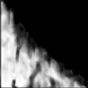
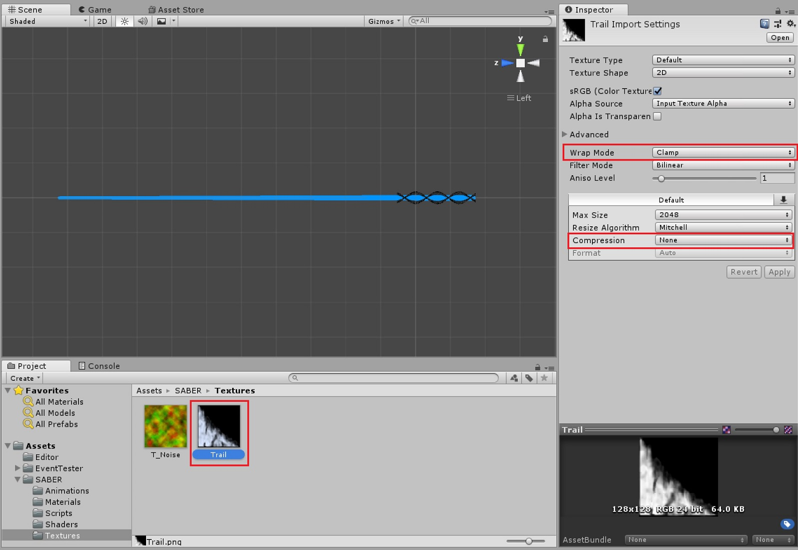
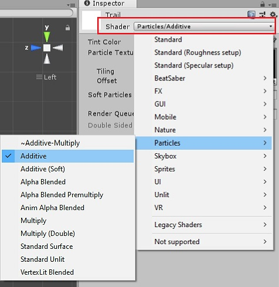
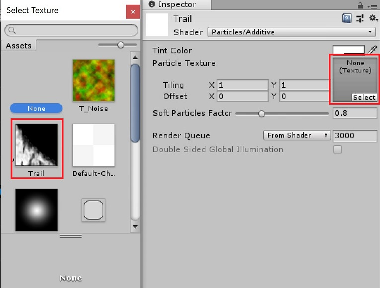
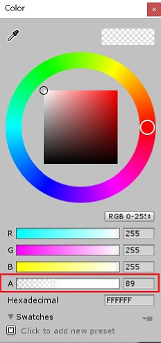
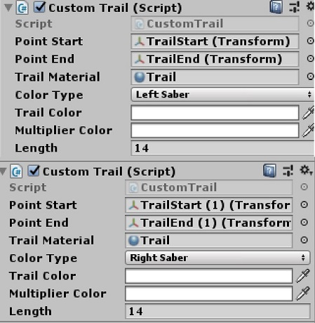

Setting Up The Trail Material
First you will need to find a trail texture. This dictates the
“design” of your trail. They can be created using almost any image
editing software.
It is preferrable to use a file format that supports
transparancy, but other formats will work too as long as it can be
handled by Unity.
Here is an example of the trail that’s used in dotSpiral V1 :

NOTE: Since I used an additive shader, black will act as transparancy
Click on your trail texture and set Wrap Mode to Clamp and set
Compression to None. Then press Apply

After that, In your project files, Right-click > Create >
Material. Name this whatever you like (as long as it can be
differentiated from the other materials).
We will use the Particles/Additive shader for this trail. You
could also experiment with other shaders depending on what effect
you’re going for.

Then we can add our trail texture to the material by adding it
to the Particle Texture field

In the Tint Color field, you can adjust the alpha slider to
determine how dark / bright your trail will be.

We’re almost done! Now all you gotta do is add the trail material
to both sabers.
Select both sabers in your hierarchy and drag the material onto
the Trail Material field.
Each trail component should look something like this :

You're now done! Export your sabers using the Saber Exporter and use them in-game!
NOTE: Before you upload your sabers to
Modelsaber, make sure you playtest your sabers. Maybe even have someone else look at it beforehand. They may be able to spot something that you may have not caught yourself.